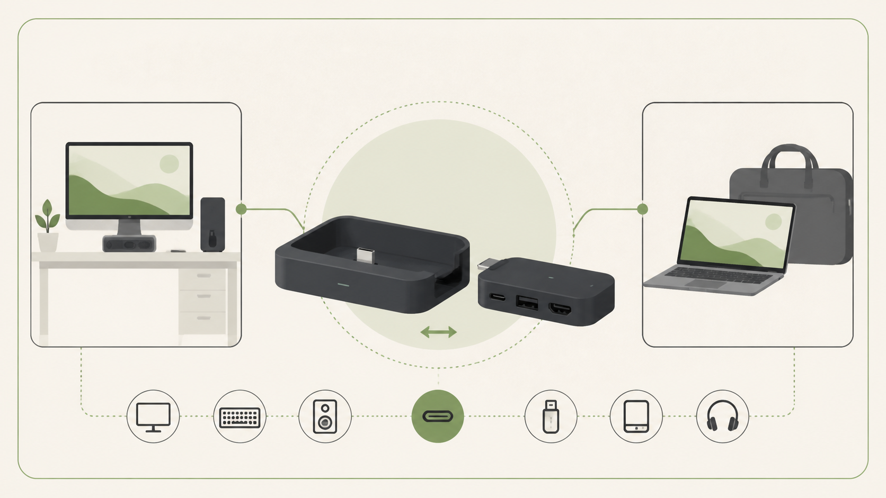
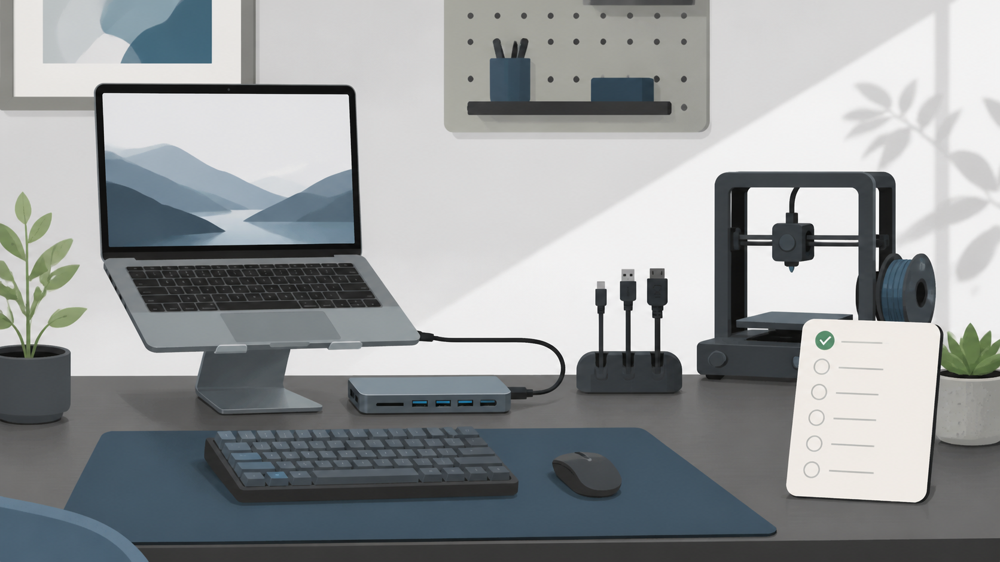
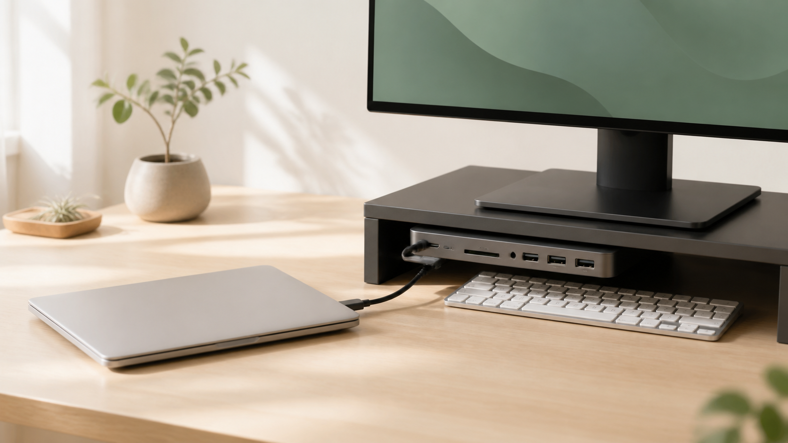
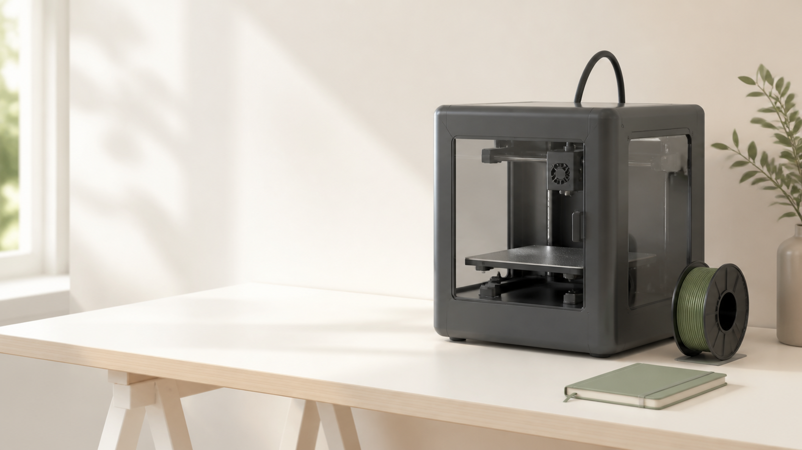
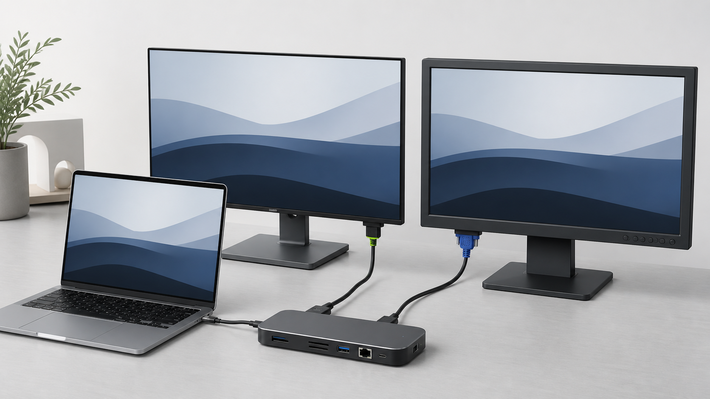
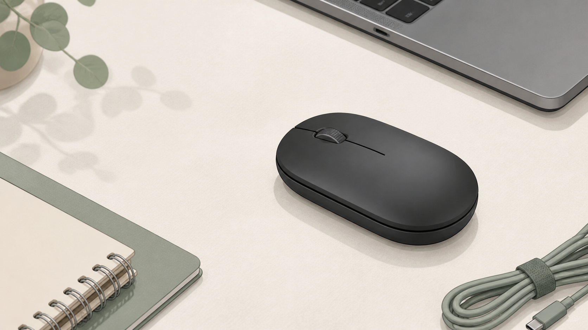
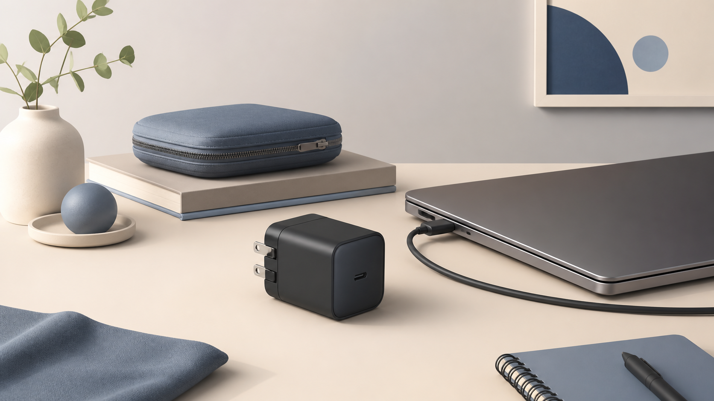
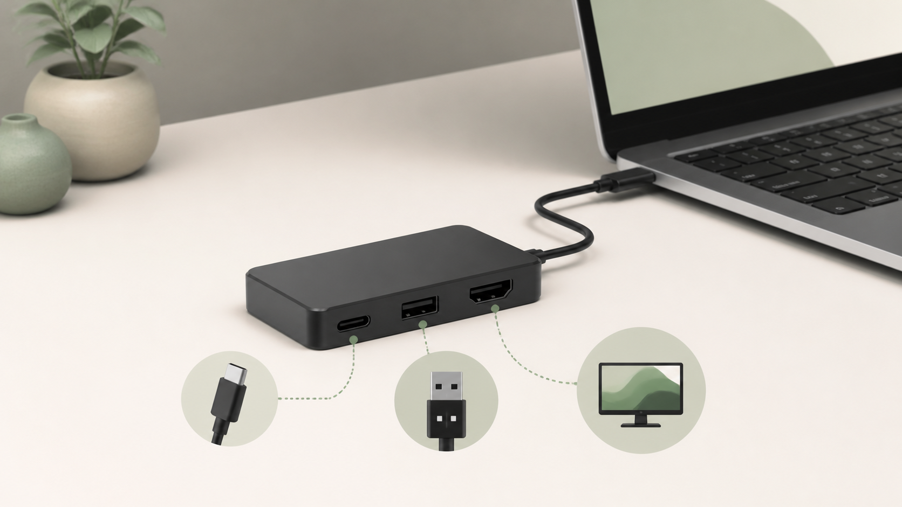

Anker Nano ドッキングステーションを選ぶ前に。着脱式USB-Cハブで決めるMacBookの常設・持ち出し
映像出力、常設配線、持ち出し時の切り替えから、着脱式ハブが合う条件を整理します。
INDEPENDENT TECH FIELD NOTES
デスク環境、キーボード、3Dプリント、Mac周辺機器。買う前の迷いと、買った後の小さな困りごとを、実用の目線で記録します。
値引きより先に役割を決める。Mac周辺機器と3Dプリントの購入候補を、向く条件・見送る条件から整理します。

記事を読む →START WITH YOUR SETUP
必要な端子を増やす前に、映像・高速データ・充電を同時に使うかでハブと充電器の役割を分けます。
キーボードやマウスは、機能の多さではなく、USBポート・入力頻度・机上の距離から選びます。
性能表の前に、作りたい物の大きさ・置き場所・使う材料を順番に確認します。
NEW POSTS

映像出力、常設配線、持ち出し時の切り替えから、着脱式ハブが合う条件を整理します。

机の奥行き、モニター重量、USB-Cの接続条件から、スタンド一体型ドックが合うか整理します。

造形サイズ、設置寸法、材料、AMS連携から、A1 miniからの移行条件を整理します。

ミラー表示・端子・給電・5Gbpsから、10-in-1ハブが合う条件を整理します。

USBポート、テンキー、設置幅、電池式から、K250が合う条件を整理します。

接続方法・利き手・持ち運びから、コンパクトBluetoothマウスが合う条件を整理します。

充電する機器、ポート数、持ち運びから考える小型USB-C充電器選び。

映像・充電・データの役割から判断する、コンパクトなUSB-Cハブ選び。

反復操作、連続調整、設置面積、対応環境から判断するデスクコントローラー選び。

置き場所、造形サイズ、使う素材から考える、初めての3Dプリンター選び。

1画面の4K/60Hzと高速データ転送を両立したい人のための、USB-Cハブの選び方。

作業内容と置ける面積から考える、買い足す前の基本設計。
EDITORIAL POLICY
商品を紹介する記事では、確認できた情報源と使用条件を示します。広告・アフィリエイトリンクを掲載する場合は、その旨を分かる位置に表示します。